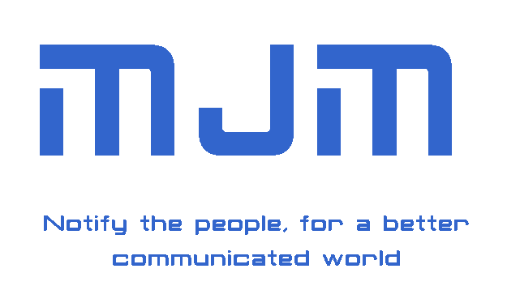

Choose which alerts your are interested in and the ones from near you
-mjm- like the confirmation sound everybody loves.
It's an web app that takes as basis a small comfirmation from the general users who use it. It helps not only researchers but in social problems many face.
For example: There is an Earthquake in Guatemala, how do we know in what departments it was felt.
We solve that with a simple question: ¿Did you felt that earthquake? Possible Answers: mjm. Nope. If Mjm. It sends the user geolocation and the timestamp to de question creator, so he can get full graphical Visualization of the answers